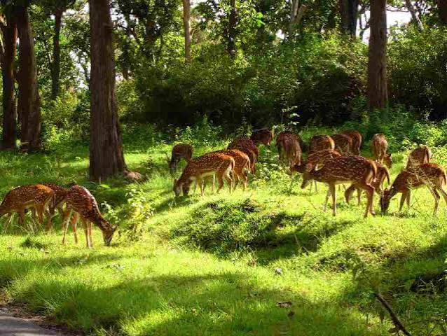
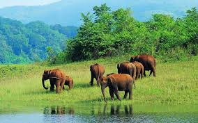
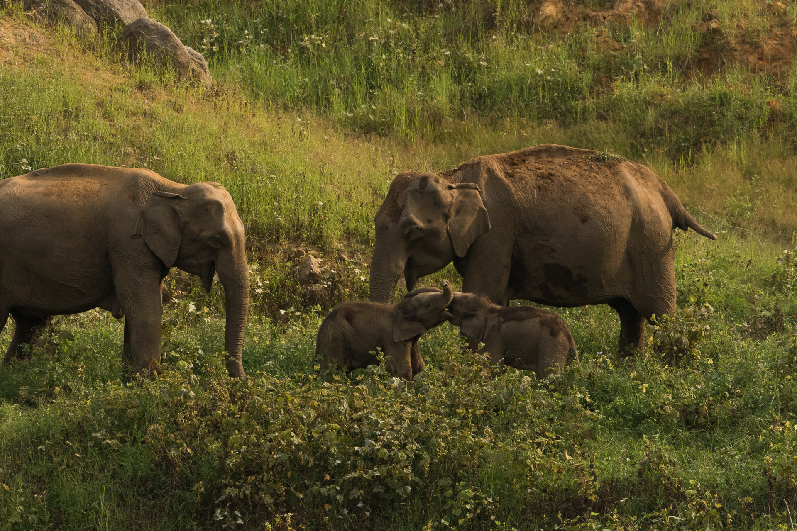
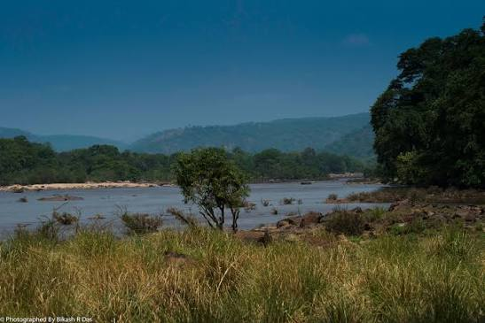
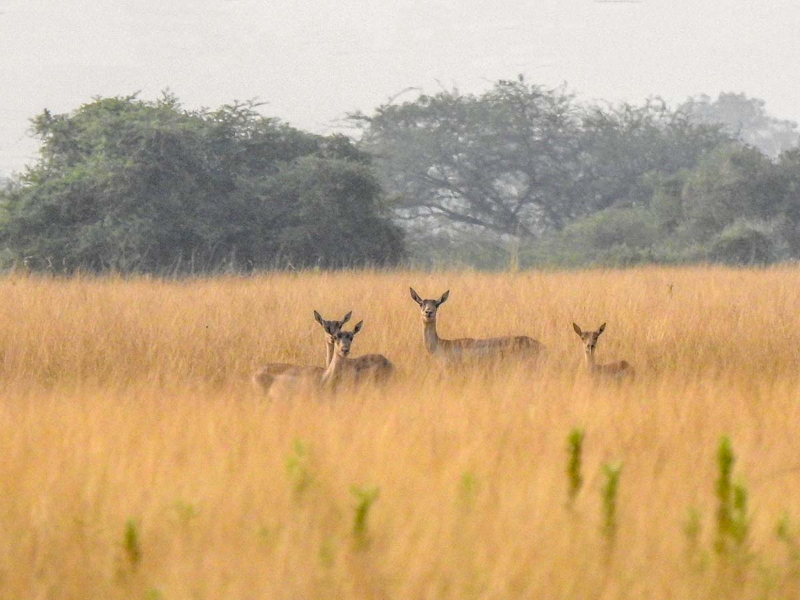
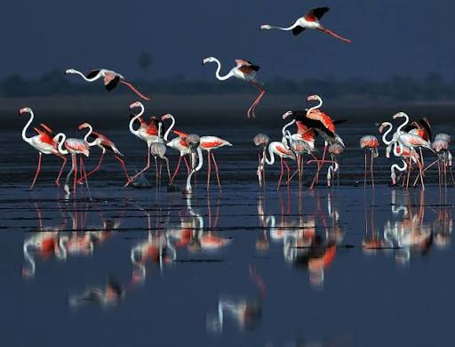
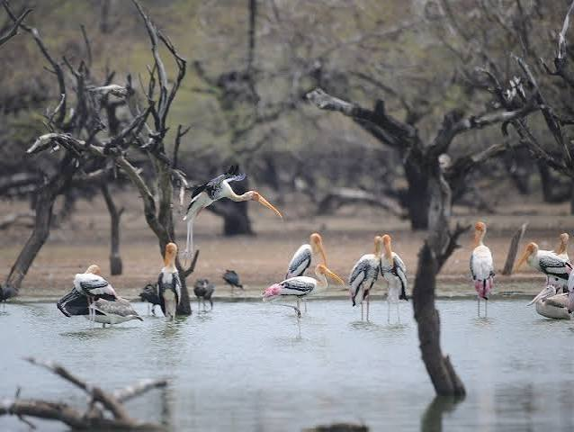

தமிழ்நாட்டின் சரணாலயங்கள், வனவிலங்குகள், பறவைகள், காடுகள் மற்றும் ஈரநிலங்களைப் பாதுகாக்கும் முக்கியமான இயற்கைப் பகுதிகள் ஆகும். யானைகள், புலிகள், மான்கள் முதல் ஆயிரக்கணக்கான புலம்பெயர் பறவைகள் வரை பல உயிரினங்களுக்கு இவை பாதுகாப்பான வாழிடங்களாக விளங்குகின்றன.
2026-ஆம் ஆண்டின் நிலவரப்படி, தமிழ்நாட்டில் 36 முக்கியமான சரணாலயங்கள் உள்ளன. இவை 18 வனவிலங்கு சரணாலயங்கள் மற்றும் 18 பறவைகள் சரணாலயங்கள் எனப் பிரிக்கப்படுகின்றன.
“சரணாலயங்கள் — காடுகளையும், உயிரினங்களையும், இயற்கையின் சமநிலையையும் காக்கும் பாதுகாப்புக் கவசங்கள்.”
சரணாலயங்கள் அரிய உயிரினங்களைப் பாதுகாப்பதுடன், இயற்கைச் சூழலையும் நீர்வளங்களையும் பாதுகாக்க உதவுகின்றன.
புலி, யானை, மான் உள்ளிட்ட விலங்குகளுக்கு பாதுகாப்பான வாழிடங்களை வழங்குகின்றன.
உள்நாட்டு மற்றும் புலம்பெயர் பறவைகளுக்கு உணவு, இனப்பெருக்கம் மற்றும் ஓய்விடங்களை வழங்குகின்றன.
முக்கியமான காட்டு நிலப்பரப்புகளையும் உயிரியல் வளங்களையும் பாதுகாக்கின்றன.
பல்வேறு தாவரங்கள் மற்றும் விலங்கினங்களின் வாழ்வை பாதுகாக்கின்றன.
ஏரிகள், குளங்கள், சதுப்புநிலங்கள் மற்றும் நீர்நிலங்களைப் பாதுகாக்கின்றன.
இயற்கைச் சூழலின் சமநிலையை பராமரிக்க உதவுகின்றன.
வனவிலங்கு மற்றும் சுற்றுச்சூழல் ஆய்வுகளுக்கு உதவுகின்றன.
பெரிய பாலூட்டிகள், அரிய விலங்குகள் மற்றும் காட்டு உயிரினங்களின் பாதுகாப்பில் முக்கியத்துவம் பெறுகின்றன.
ஏரிகள், குளங்கள், ஈரநிலங்கள் மற்றும் கடலோர நீர்நிலைகளைச் சார்ந்த பறவைகளைப் பாதுகாக்கின்றன.
நீர்நிலங்களைச் சார்ந்த உயிரினங்கள் மற்றும் புலம்பெயர் பறவைகளுக்கு முக்கியமானவை.
ஒரு காட்டு பகுதியிலிருந்து மற்றொரு பகுதிக்கு யானைகள் மற்றும் பிற விலங்குகள் பாதுகாப்பாக நகர உதவும் பகுதிகள்.

தந்தை பெரியார் வனவிலங்கு சரணாலயம் ஈரோடு மாவட்டத்தின் அந்தியூர் பகுதியில் அமைந்துள்ள முக்கியமான பாதுகாப்புப் பகுதியாகும். இது கிழக்குத் தொடர்ச்சி மலைப் பகுதிகளில் உள்ள காட்டு நிலப்பரப்புகளை இணைக்கும் முக்கியமான சூழலியல் பகுதியாக விளங்குகிறது.
புலிகள், ஆசிய யானைகள் மற்றும் நீர்நிலைகளைச் சார்ந்த உயிரினங்களுக்கு இப்பகுதி முக்கிய வாழிடமாக உள்ளது.

ஆனைமலை வனவிலங்கு சரணாலயம், தற்போது இந்திரா காந்தி வனவிலங்கு சரணாலயம் மற்றும் தேசியப் பூங்கா என அறியப்படும் பாதுகாப்புப் பகுதியாகும்.
மேற்கு தொடர்ச்சி மலைகளின் முக்கியமான காட்டு மற்றும் மலைச் சூழல்களை உள்ளடக்கிய இப்பகுதி, நீலகிரி வரையாடு மற்றும் சிங்கவால் குரங்கு போன்ற அரிய உயிரினங்களுக்கு முக்கிய வாழிடமாக உள்ளது.

காவிரி வடக்கு மற்றும் தெற்கு வனவிலங்கு சரணாலயங்கள் தமிழ்நாட்டின் வடமேற்குப் பகுதிகளில் காவிரி ஆற்றைச் சுற்றியுள்ள காடுகள் மற்றும் ஆற்றங்கரைச் சூழல்களைப் பாதுகாக்கின்றன.
இவை தமிழ்நாடு மற்றும் கர்நாடகத்தின் வனப்பகுதிகளுக்கு இடையே விலங்குகள் நகர்வதற்கான முக்கியமான வனவிலங்கு வழித்தடங்களாக செயல்படுகின்றன.

வல்லநாடு கருமான் சரணாலயம் தூத்துக்குடி மாவட்டத்தில் அமைந்துள்ள தனித்துவமான புதர்க்காடு மற்றும் புல்வெளிச் சூழலைப் பாதுகாக்கும் முக்கியமான சரணாலயமாகும்.
இப்பகுதி குறிப்பாக இந்திய கருமான் (Blackbuck) இனத்தின் தெற்குப் பகுதியில் காணப்படும் முக்கியமான வாழிடத்தைப் பாதுகாப்பதற்காக உருவாக்கப்பட்டது.

புலிக்காட் ஏரி பறவைகள் சரணாலயம் தமிழ்நாடு–ஆந்திரப் பிரதேச எல்லைப் பகுதியில் அமைந்துள்ள புலிக்காட் ஏரியைச் சார்ந்த முக்கியமான பறவைகள் பாதுகாப்புப் பகுதியாகும்.
இது இந்தியாவின் முக்கியமான உவர்நீர் ஏரி சூழல்களில் ஒன்றாக விளங்குவதுடன், குளிர்காலத்தில் ஆயிரக்கணக்கான புலம்பெயர் பறவைகளுக்கு உணவளிக்கும் பகுதியாக உள்ளது.

கூந்தங்குளம் பறவைகள் சரணாலயம் திருநெல்வேலி மாவட்டத்தில் அமைந்துள்ள முக்கியமான பறவைகள் சரணாலயமாகும்.
இப்பகுதியில் உள்ளூர் மக்கள் மற்றும் பாதுகாப்பு அமைப்புகளின் பங்களிப்புடன் பறவைகள் பாதுகாக்கப்படுவது இதன் சிறப்பாகும். பல்வேறு புலம்பெயர் பறவைகள் இங்கு வந்து இனப்பெருக்கம் செய்கின்றன.
| சரணாலயம் | வகை | முக்கிய சிறப்பு |
|---|---|---|
| தந்தை பெரியார் | வனவிலங்கு | புலி, யானை மற்றும் வனவிலங்கு வழித்தடம் |
| ஆனைமலை | வனவிலங்கு | சிங்கவால் குரங்கு, நீலகிரி வரையாடு |
| காவிரி வடக்கு & தெற்கு | வனவிலங்கு | யானைகள் மற்றும் ஆற்றங்கரைச் சூழல் |
| வல்லநாடு | வனவிலங்கு | இந்திய கருமான் |
| புலிக்காட் | பறவைகள் | ஃபிளமிங்கோ மற்றும் புலம்பெயர் பறவைகள் |
| கூந்தங்குளம் | பறவைகள் | சமூகப் பங்களிப்புடன் பறவை பாதுகாப்பு |
| வேடந்தாங்கல் | பறவைகள் | நீர்ப்பறவைகள் மற்றும் இனப்பெருக்கம் |
| வெள்ளோடு | பறவைகள் | ஈரநிலப் பறவைகள் |
| மேல்செல்வனூர்–கீழ்செல்வனூர் | பறவைகள் | புலம்பெயர் பறவைகள் |
| கரிக்கிலி | பறவைகள் | நீர்ப்பறவைகளின் முக்கிய வாழிடம் |
“இயற்கையைப் பாதுகாப்பது என்பது விலங்குகளை மட்டும் காப்பது அல்ல; நமது எதிர்காலத்தையும் காப்பதாகும்.”